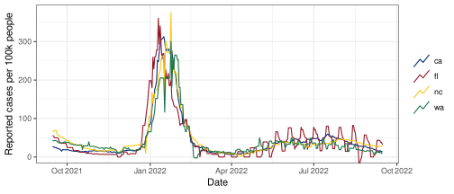
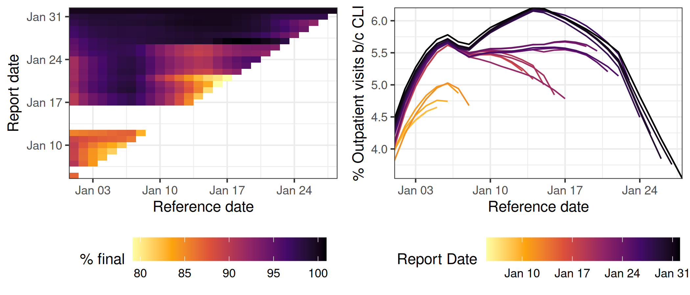

Easy to join us from anywhere (lots of volunteers during Covid-19 pandemic).
We are:
CDC Center of Excellence for Influenza and Covid-19 Forecasting (2019-24).
CDC Innovation Center for Outbreak Analytics and Disease Modeling (2024-29).
Our mission: To develop the theory and practice of epidemic detection, tracking and forecasting, and their use in decision making, both public and private.
What does Delphi do?
Procure real-time, aggregated data streams informative of infectious diseases and syndromes, in collaboration with partners in industry and government.
Extract signals and make them widely available via the Epidata platform & API.
Develop and deploy algorithms for epidemic detection, tracking, forecasting.
Develop and maintain statistical software packages for these tasks.
Make it all production-grade, maximally-accessible, and open-source (to serve CDC, state and local public health agencies, epi-forecasting researchers, data journalists, the public)
What we provide
2 Workshop Overview and System Setup
What we will cover
Characteristics of panel data in epidemiology
Tools for processing and plotting panel data
Statistical background on nowcasting and forecasting
Tools for building nowcasting and forecasting models
Plenty of examples throughout of real case studies
Goals part I
Expose you to a statistical way of thinking about now/forecasting
Certain basic mindsets (e.g., the importance of empirical validation using techniques like time series cross-validation) are ubiquitous
Certain basic modeling considerations (e.g., starting simple and building up complexity, taming variance through regularization, addressing nonstationarity with trailing training windows) are also ubiquitous
Goals part II
Expose you to software packages which aid processing, tracking, nowcasting, and forecasting with panel data
These tools are still in development and we welcome your feedback
We have tried hard to get the framework right; but many individual pieces themselves could still be improved
If these aren’t working for you, then we want to hear from you!
We welcome collaboration, and everything we do is open source
A disclaimer
Our backgrounds are primarily in statistics and computer science
This obviously influences our way of thinking and our approach to nowcasting and forecasting
We don’t have nearly as much experience with traditional epi models but we do have opinions about the pros/cons. Ask us at any point if you have a question about why we’re doing things a certain way
One last slide
This workshop is supposed to be useful for YOU. Ask questions if you have them, don’t be shy
We may not (likely won’t?) cover everything. Hopefully the materials will be a resource for you beyond this workshop
This is enough, but we hope you’ll want to work through the code as we go along.
Detailed versions of the next few slides are shown at the Repo Link above.
System setup – Required software
We assume you already have
R
An IDE. We’ll use RStudio, but you can use VSCode or Emacs or Whatnot
System setup – Downloading the materials
Easy way:
Click the Big Green Button that says < > Code ▾
Choose Download Zip
Open the Zip directory and then Open micom-tooling-workshop-2025.Rproj
More expert (local git user):
Click the Big Green Button that says < > Code ▾
Copy the URL.
Open RStudio, select File > New Project > Version Control. Paste there and proceed.
Even more expert (wants github remote):
Click the Grey Button that says ⑂ Fork ▾
Proceed along the same lines as above.
System setup – Installing required packages
We will use a lot of packages.
We’ve tried to make it so you can get them all at once (with the right versions)
ü§û We hope this works‚Ķ ü§û Note that you can ‚ÄúCopy to Clipboard‚Äù
In RStudio:
install.packages("pak") # good for installing from non-CRAN sourcespak::pkg_install("cmu-delphi/InsightNetFcast24", dependencies =TRUE)InsightNetFcast24::verify_setup()
Hopefully, you see:
✔ You should be good to go!
Ask for help if you see something like:
Error in `verify_setup()`:
! The following packages do not have the correct version:
ℹ Installed: epipredict 0.2.0.
ℹ Required: epipredict == 0.1.5.
3 Panel Data
Panel data
Panel data or longitudinal data, contain cross-sectional measurements of subjects over time.
Since we’re working with aggregated data, the subjects are geographic units (e.g. counties, states).
In table form, panel data is a time index + one or more locations/keys.
Ex: The % of outpatient doctor visits that are COVID-related in CA from June 2020 to Dec. 2021 (docs):
# A tibble: 549 × 3
time_value geo_value percent_cli
<date> <chr> <dbl>
1 2020-06-01 ca 2.75
2 2020-06-02 ca 2.57
3 2020-06-03 ca 2.48
4 2020-06-04 ca 2.41
5 2020-06-05 ca 2.57
6 2020-06-06 ca 2.63
7 2020-06-07 ca 2.73
8 2020-06-08 ca 3.04
9 2020-06-09 ca 2.97
10 2020-06-10 ca 2.99
# ℹ 539 more rows
Examples of panel data - COVID-19 cases
JHU CSSE COVID cases per 100k estimates the daily number of new confirmed COVID-19 cases per 100,000 population, averaged over the past 7 days.

Examples of panel data - HHS Admissions
Confirmed COVID-19 Hospital Admissions per 100k estimates the daily sum of adult and pediatric confirmed COVID-19 hospital admissions, per 100,000 population, averaged over the past 7 days.
4 Versioned Data
Intro to versioned data
Many epidemic aggregates are subject to reporting delays and revisions
This is because individual-level data has delayed availability:
Person comes to ER → Admitted → Has some tests → Tests come back → Entered into the system → …
So, a “Hospital admission” may not attributable to a particular condition until a few days have passed (the patient may even have been released)
Aggregated data have a longer pipeline from the incident to the report.
So we have to track both: when the event occurred and when it was reported
Additionally, various mistakes lead to revisions
This means there can be many different values for the same date
Versioned data
The event time is indicated by time_value (aka reference_date)
Now, we add a second time index to indicate the data version (aka reporting_date)
version = the time at which we saw a particular value associated to a time_value
# A tibble: 6 × 4
time_value geo_value percent_cli version
<date> <chr> <dbl> <date>
1 2020-06-01 ca 2.14 2020-06-06
2 2020-06-01 ca 2.14 2020-06-08
3 2020-06-01 ca 2.11 2020-06-09
4 2020-06-01 ca 2.13 2020-06-10
5 2020-06-01 ca 2.20 2020-06-11
6 2020-06-01 ca 2.23 2020-06-12
Note that this feature can be indicated in different ways (ex. version, issue, release, as_of).
Versioned panel data
Estimated percentage of outpatient visits due to CLI across multiple versions.
Latency and revision in signals
Latency the delay between data collection and availability
Example: A signal based on insurance claims may take several days to appear as claims are processed
Revision data is updated or corrected after initial publication
Example: COVID-19 case reports are revised reporting backlogs are cleared
Latency and revision in signals - Example
Recall the first example of panel & versioned data we’ve seen…
On June 1, this signal is 5 days latent: min(version - time_value)
# A tibble: 6 × 5
time_value geo_value percent_cli version version_time_diff
<date> <chr> <dbl> <date> <drtn>
1 2020-06-01 ca 2.14 2020-06-06 5 days
2 2020-06-02 ca 1.96 2020-06-06 4 days
3 2020-06-03 ca 1.77 2020-06-06 3 days
4 2020-06-04 ca 1.65 2020-06-08 4 days
5 2020-06-05 ca 1.60 2020-06-09 4 days
6 2020-06-06 ca 1.34 2020-06-10 4 days
and subject to revision
# A tibble: 6 × 5
time_value geo_value percent_cli version version_time_diff
<date> <chr> <dbl> <date> <drtn>
1 2020-06-01 ca 2.14 2020-06-06 5 days
2 2020-06-01 ca 2.14 2020-06-08 7 days
3 2020-06-01 ca 2.11 2020-06-09 8 days
4 2020-06-01 ca 2.13 2020-06-10 9 days
5 2020-06-01 ca 2.20 2020-06-11 10 days
6 2020-06-01 ca 2.23 2020-06-12 11 days
Revision triangle, Outpatient visits in WA 2022
7-day trailing average to smooth day-of-week effects

Revisions
Many data sources are subject to revisions:
Case and death counts are frequently corrected or adjusted by authorities
Medical claims can take weeks to be submitted and processed
Lab tests and medical records can be backlogged
Surveys are not completed promptly
An accurate revision log is crucial for researchers building forecasts
Obvious but crucial
A forecast that is made today can only use data we have access to today
Three types of revisions
Sources that don’t revise (provisional and final are the same)
Facebook Survey and Google symptoms
Predictable revisions
Claims data (CHNG) and public health reports aligned by test, hospitalization, or death date
Almost always revised upward as additional claims enter the pipeline
Revisions that are large and erratic to predict
COVID cases and deaths
These are aligned by report date
Types of revisions - Comparison between 2. and 3.
Revision behavior for two indicators in the HRR containing Charlotte, NC.
DV-CLI signal (left): regularly revised, but effects fade
JHU CSSE cases (right) remain “as first reported” until a major correction is made on Oct. 19
Key takeaways
Medical claims revisions
More systematic and predictable
COVID-19 case report revisions
Erratic and often unpredictable
Large spikes or anomalies can occur as
Reporting backlogs are cleared
Changes in case definitions are implemented
Reporting backlogs - Example
In Bexar County, Texas, during the summer of 2020…
Large backlog of case reports results in a spike
Auxilliary signals show no such dramatic increase
Reports themselves may not be trustworthy without context
Reporting backlogs - Key takeaways
Reporting issues common across U.S. jurisdictions
Audits regularly discovered misclassified or unreported cases and deaths
Cross-checking data with external sources from different reporting systems
5 Epidata Repository and API
What is the Epidata repository
Epidata: repository of aggregated epi-surveillance time series
Code is open-source. Signals can be either public or restricted.
To date, it has accumulated over 5 billion records.
At the peak of the pandemic, handled millions of API queries per day.
Many aren’t available elsewhere
Data from
public health reporting, medical insurance claims, medical device data, Google search queries, wastewater, app-based mobility patterns.
# A tibble: 3 × 15
geo_value signal source geo_type time_type time_value direction issue
<chr> <chr> <chr> <fct> <fct> <date> <dbl> <date>
1 nc confirmed… hhs state day 2024-04-01 NA 2024-04-22
2 nc confirmed… hhs state day 2024-04-05 NA 2024-04-22
3 nc confirmed… hhs state day 2024-04-06 NA 2024-04-22
# ℹ 7 more variables: lag <dbl>, missing_value <dbl>, missing_stderr <dbl>,
# missing_sample_size <dbl>, value <dbl>, stderr <dbl>, sample_size <dbl>
# A tibble: 28 × 2
Endpoint Description
<chr> <chr>
1 pub_covid_hosp_facility() COVID hospitalizations by facility
2 pub_covid_hosp_facility_lookup() Helper for finding COVID hospitalization f…
3 pub_covid_hosp_state_timeseries() COVID hospitalizations by state
4 pub_covidcast() Various COVID and flu signals via the COVI…
5 pub_covidcast_meta() Metadata for the COVIDcast endpoint
6 pub_delphi() Delphi's ILINet outpatient doctor visits f…
7 pub_dengue_nowcast() Delphi's PAHO dengue nowcasts (North and S…
8 pub_ecdc_ili() ECDC ILI incidence (Europe)
9 pub_flusurv() CDC FluSurv flu hospitalizations
10 pub_fluview() CDC FluView ILINet outpatient doctor visits
11 pub_fluview_clinical() CDC FluView flu tests from clinical labs
12 pub_fluview_meta() Metadata for the FluView endpoint
13 pub_gft() Google Flu Trends flu search volume
14 pub_kcdc_ili() KCDC ILI incidence (Korea)
15 pub_meta() Metadata for the Delphi Epidata API
16 pub_nidss_dengue() NIDSS dengue cases (Taiwan)
17 pub_nidss_flu() NIDSS flu doctor visits (Taiwan)
18 pub_nowcast() Delphi's ILI Nearby nowcasts
19 pub_paho_dengue() PAHO dengue data (North and South America)
20 pub_wiki() Wikipedia webpage counts by article
21 pvt_cdc() CDC total and by topic webpage visits
22 pvt_dengue_sensors() PAHO dengue digital surveillance sensors (…
23 pvt_ght() Google Health Trends health topics search …
24 pvt_meta_norostat() Metadata for the NoroSTAT endpoint
25 pvt_norostat() CDC NoroSTAT norovirus outbreaks
26 pvt_quidel() Quidel COVID-19 and influenza testing data
27 pvt_sensors() Influenza and dengue digital surveillance …
28 pvt_twitter() HealthTweets total and influenza-related t…
Using the covidcast_epidata()
covidcast_epidata() details for signals at the COVIDcast endpoint
Assign to an object
cc_ed <-covidcast_epidata()
List data sources
cc_ed$sources, with tibbles describing the included signals
Editor Support
In RStudio or similar editors, use tab completion to explore:
cc_ed$source$ to view available data sources.
cc_ed$signals$ to see signal options with autocomplete assistance.
Filtering Convenience
Signals are prefixed with their source for easier navigation
cc_ed <-covidcast_epidata()head(cc_ed$sources, n =2) # head(list, n = 2) will print the first two elements of the list
# A tibble: 6 × 8
geo_value signal source geo_type time_value issue lag value
<chr> <chr> <chr> <fct> <date> <date> <dbl> <dbl>
1 ak confirmed_7dav_in… jhu-c… state 2021-01-01 2023-03-03 791 35.9
2 al confirmed_7dav_in… jhu-c… state 2021-01-01 2023-03-03 791 67.7
3 ar confirmed_7dav_in… jhu-c… state 2021-01-01 2023-03-03 791 76.2
4 as confirmed_7dav_in… jhu-c… state 2021-01-01 2023-03-03 791 0
5 az confirmed_7dav_in… jhu-c… state 2021-01-01 2023-03-03 791 83.4
6 ca confirmed_7dav_in… jhu-c… state 2021-01-01 2023-03-10 798 104.
COVIDcast main endpoint - Example query
County geo_values are FIPS codes: Orange County, California.
# A tibble: 6 × 113
hospital_pk state ccn hospital_name address city zip hospital_subtype
<chr> <chr> <chr> <chr> <chr> <chr> <chr> <chr>
1 100075 FL 100075 ST JOSEPHS HOSP… 3001 W… TAMPA 33677 Short Term
2 100075 FL 100075 ST JOSEPHS HOSP… 3001 W… TAMPA 33677 Short Term
3 100075 FL 100075 ST JOSEPHS HOSP… 3001 W… TAMPA 33677 Short Term
4 100075 FL 100075 ST JOSEPHS HOSP… 3001 W… TAMPA 33677 Short Term
5 100075 FL 100075 ST JOSEPHS HOSP… 3001 W… TAMPA 33677 Short Term
6 100075 FL 100075 ST JOSEPHS HOSP… 3001 W… TAMPA 33677 Short Term
# ℹ 105 more variables: fips_code <chr>, geocoded_hospital_address <chr>,
# hhs_ids <chr>, publication_date <date>, collection_week <date>,
# is_metro_micro <lgl>, total_beds_7_day_sum <dbl>,
# all_adult_hospital_beds_7_day_sum <dbl>,
# all_adult_hospital_inpatient_beds_7_day_sum <dbl>,
# inpatient_beds_used_7_day_sum <dbl>,
# all_adult_hospital_inpatient_bed_occupied_7_day_sum <dbl>, …
Example queries - Other endpoints: Hospitalizations
# A tibble: 6 × 8
geo_value signal source time_value issue lag value stderr
<chr> <chr> <chr> <date> <date> <dbl> <dbl> <dbl>
1 pa smoothed_adj_cli doctor-vi… 2020-05-01 2020-05-07 6 2.58 NA
2 pa smoothed_adj_cli doctor-vi… 2020-05-01 2020-05-08 7 3.28 NA
3 pa smoothed_adj_cli doctor-vi… 2020-05-01 2020-05-09 8 3.32 NA
4 pa smoothed_adj_cli doctor-vi… 2020-05-01 2020-05-12 11 3.59 NA
5 pa smoothed_adj_cli doctor-vi… 2020-05-01 2020-05-13 12 3.63 NA
6 pa smoothed_adj_cli doctor-vi… 2020-05-01 2020-05-14 13 3.66 NA
Obtaining multiple issues for one state
To get all issues up to a specific date, set an extreme lower bound
# A tibble: 6 × 8
geo_value signal source time_value issue lag value stderr
<chr> <chr> <chr> <date> <date> <dbl> <dbl> <dbl>
1 pa smoothed_adj_cli doctor-vi… 2020-05-01 2020-05-07 6 2.58 NA
2 pa smoothed_adj_cli doctor-vi… 2020-05-01 2020-05-08 7 3.28 NA
3 pa smoothed_adj_cli doctor-vi… 2020-05-01 2020-05-09 8 3.32 NA
4 pa smoothed_adj_cli doctor-vi… 2020-05-01 2020-05-12 11 3.59 NA
5 pa smoothed_adj_cli doctor-vi… 2020-05-01 2020-05-13 12 3.63 NA
6 pa smoothed_adj_cli doctor-vi… 2020-05-01 2020-05-14 13 3.66 NA
No change here • Can matter if the latency or reporting lag is unknown
At some point, nothing changes • It is finalized • That will be the “last” issue
dv_pa_issues_all <-pub_covidcast(source ="doctor-visits",signals ="smoothed_adj_cli",time_type ="day",time_values ="2020-05-01",geo_type ="state",geo_values ="pa",issues =epirange("1900-01-01", "2024-12-11") # From the 1900s to today)
# A tibble: 6 × 8
geo_value signal source time_value issue lag value stderr
<chr> <chr> <chr> <date> <date> <dbl> <dbl> <dbl>
1 pa smoothed_adj_cli doctor-vi… 2020-05-01 2020-06-29 59 5.99 NA
2 pa smoothed_adj_cli doctor-vi… 2020-05-01 2020-06-30 60 5.99 NA
3 pa smoothed_adj_cli doctor-vi… 2020-05-01 2020-07-01 61 5.95 NA
4 pa smoothed_adj_cli doctor-vi… 2020-05-01 2020-07-02 62 5.97 NA
5 pa smoothed_adj_cli doctor-vi… 2020-05-01 2020-07-03 63 5.97 NA
6 pa smoothed_adj_cli doctor-vi… 2020-05-01 2020-07-04 64 5.97 NA
Avoid queries with too-late minimum too-early maximum issue
# A tibble: 8 × 8
geo_value signal source time_value issue lag value stderr
<chr> <chr> <chr> <date> <date> <dbl> <dbl> <dbl>
1 pa smoothed_adj_cli doctor-vi… 2020-05-01 2020-05-07 6 2.58 NA
2 pa smoothed_adj_cli doctor-vi… 2020-05-01 2020-05-08 7 3.28 NA
3 pa smoothed_adj_cli doctor-vi… 2020-05-01 2020-05-09 8 3.32 NA
4 pa smoothed_adj_cli doctor-vi… 2020-05-01 2020-05-12 11 3.59 NA
5 pa smoothed_adj_cli doctor-vi… 2020-05-01 2020-05-13 12 3.63 NA
6 pa smoothed_adj_cli doctor-vi… 2020-05-01 2020-05-14 13 3.66 NA
7 pa smoothed_adj_cli doctor-vi… 2020-05-01 2020-05-15 14 3.66 NA
8 pa smoothed_adj_cli doctor-vi… 2020-05-01 2020-05-16 15 3.61 NA
# A tibble: 6 × 8
geo_value signal source time_value issue lag value stderr
<chr> <chr> <chr> <date> <date> <dbl> <dbl> <dbl>
1 ak smoothed_adj_cli doctor-vi… 2020-05-01 2020-05-07 6 1.61 NA
2 ak smoothed_adj_cli doctor-vi… 2020-05-01 2020-05-08 7 2.40 NA
3 ak smoothed_adj_cli doctor-vi… 2020-05-01 2020-05-09 8 2.38 NA
4 ak smoothed_adj_cli doctor-vi… 2020-05-01 2020-05-12 11 2.38 NA
5 ak smoothed_adj_cli doctor-vi… 2020-05-01 2020-05-13 12 2.36 NA
6 ak smoothed_adj_cli doctor-vi… 2020-05-01 2020-05-14 13 2.36 NA
Obtaining one issue for all states
Defaults are intended to be “what you would expect”
# A tibble: 6 × 8
geo_value signal source time_value issue lag value stderr
<chr> <chr> <chr> <date> <date> <dbl> <dbl> <dbl>
1 ak smoothed_adj_cli doctor-vi… 2020-05-01 2020-07-04 64 5.72 NA
2 al smoothed_adj_cli doctor-vi… 2020-05-01 2020-07-04 64 2.74 NA
3 ar smoothed_adj_cli doctor-vi… 2020-05-01 2020-07-04 64 4.23 NA
4 az smoothed_adj_cli doctor-vi… 2020-05-01 2020-07-04 64 2.78 NA
5 ca smoothed_adj_cli doctor-vi… 2020-05-01 2020-07-04 64 4.25 NA
6 co smoothed_adj_cli doctor-vi… 2020-05-01 2020-07-04 64 8.77 NA
most recent issue
all states
Main takeaways
Delphi Epidata: platform for real-time epidemic data
provides (aggregated) signals for tracking and forecasting
sources like health records, mobility patterns, and more.
Epidata API: delivers up-to-date, granular epidemiological data + historical versions.
{epidatr}: Client package for R
Versioned Data and Latency:
as_of: One version; the specific date when the data was last updated
issues: Multiple versions; with different as_of dates
Manages the record of revisions for transparency and accuracy in data analysis.